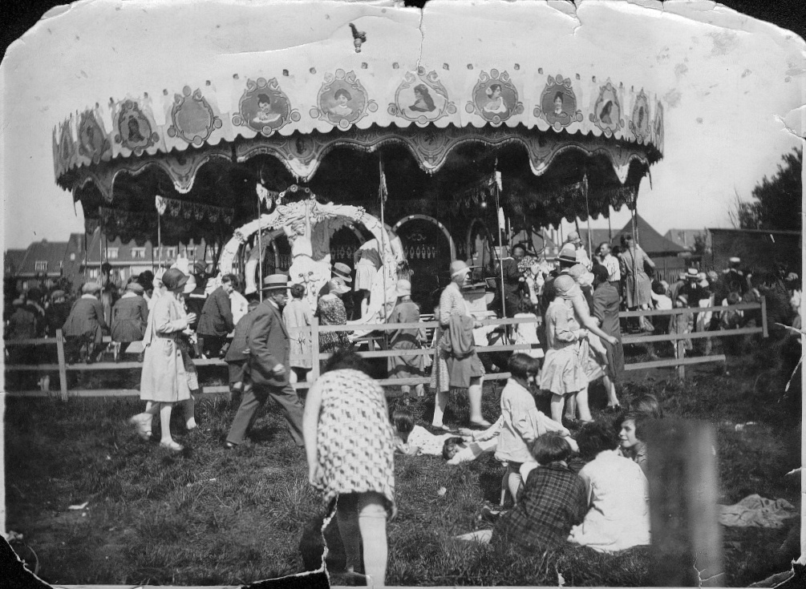
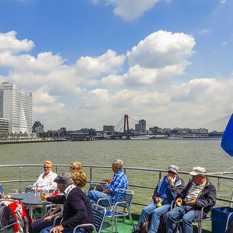

 Rotterdammers krijgen nostalgische gevoelens bij het Plaswijckpark. Het jeugdsentiment komt spontaan op wanneer je het hebt over de verkeerstuin waar je met skelters kon rondcrossen. Het Rotterdamse pretpark blaast vandaag, op 9 september, 99 kaarsjes uit! Deze negen prachtige foto’s nemen je mee naar de begintijd. In 1923 werd het park door de Rotterdamse horeca-ondernemer C.N.A. Loos - bekend van het grand café in het vooroorlogse station Hofplein - opgericht als Theetuin Hillegersberg. Deze tuin met wandelpark omvatte ook een dierenparkje waar onder meer apen en wallabies te zien waren. Het was een succes en de theetuin werd wat later uitgebreid met een rosarium, een speeltuin, een uitkijktoren en een rondvaartboot. Ook waren er roeiboten te huur. Het park was decennialang een van de weinige plekken waar de bewoners van het Oude Noorden van Rotterdam zich in een groene omgeving konden ontspannen. In 1975 kwam het voortbestaan van Plaswijckpark in gevaar. De belangstelling nam af en de inkomsten uit entreegelden waren onvoldoende. Dankzij het toekennen van een structurele jaarlijkse subsidie door de gemeente Rotterdam werd sluiting voorkomen. In 2013 werd deze bijdrage beëindigd. Wel werd in dat jaar nog een investeringssubsidie verstrekt om als slechtweeraccommodatie een overdekte speeltuin te kunnen bouwen.
De prachtig vormgegeven rondvaartboten van Spido zijn niet meer weg te denken uit Rotterdam en varen jaarlijks honderdduizenden bezoekers door de Rotterdamse havens. Water speelt een essentiële rol in de bestaansgeschiedenis van de eigenzinnige havenstad. Stap in aan de kades naast de Erasmusbrug en bekijk Rotterdam vanaf het water. De grootste haven van Europa in 75 minuten: dat is de populairste trip van Spido. Deze rondvaart gaat over de Nieuwe Maas langs de historische Veer- en Leuvehavens aan de centrumkant en aan de overkant de Rijn-, Maas- en Waalhavens. Behalve reusachtige zeeschepen en bedrijvige overslagterminals zijn ook beroemde Rotterdamse iconen zoals de Maasbruggen, de Kop van Zuid en de Euromast te zien. De langere variant duurt 2,5 uur: dan vaart u ook nog langs Pernis en de Petroleumhavens naar de Botlek. De Hollandse kustlijn ziet er anders uit sinds in 2013 de Tweede Maasvlakte werd geopend. De cijfers zijn imposant: met 7 miljoen ton steen en 20 duizend betonblokken is een kilometerslange zeewering aangelegd. Er is 240 miljoen kubieke meter zand opgespoten – omgerekend 160 keer stadion De Kuip tot aan de nok gevuld. Vanaf de Erasmusbrug vaart Spido via de Nieuwe Waterweg naar dit nieuwste stuk Nederland. Onderweg kunt u uitstappen voor een bezoek aan het interactieve informatiecentrum FutureLand.